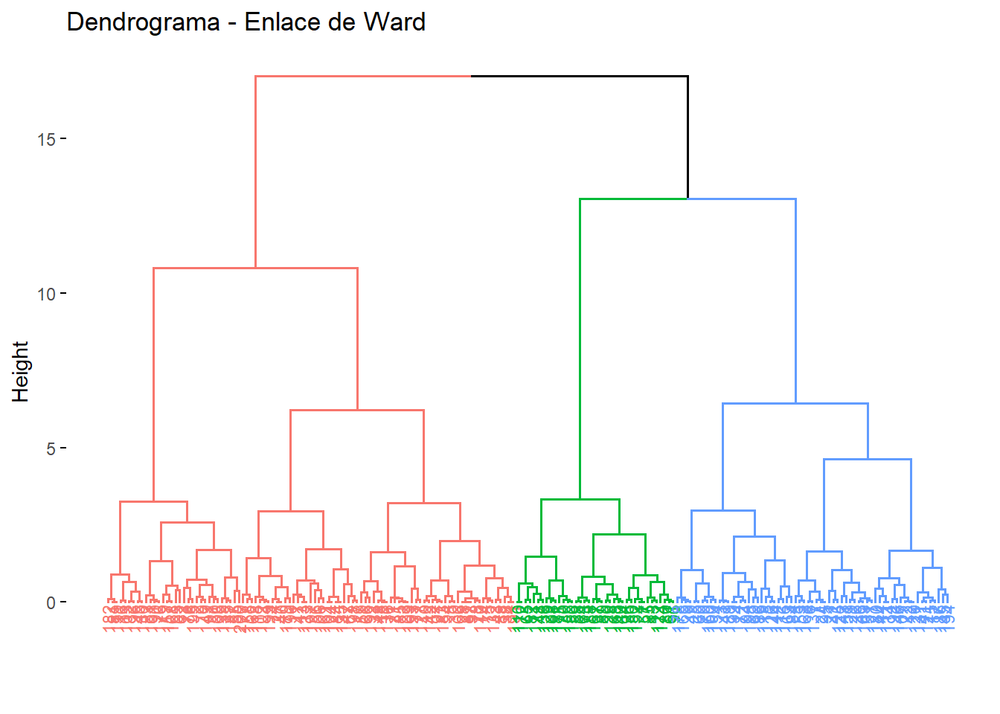
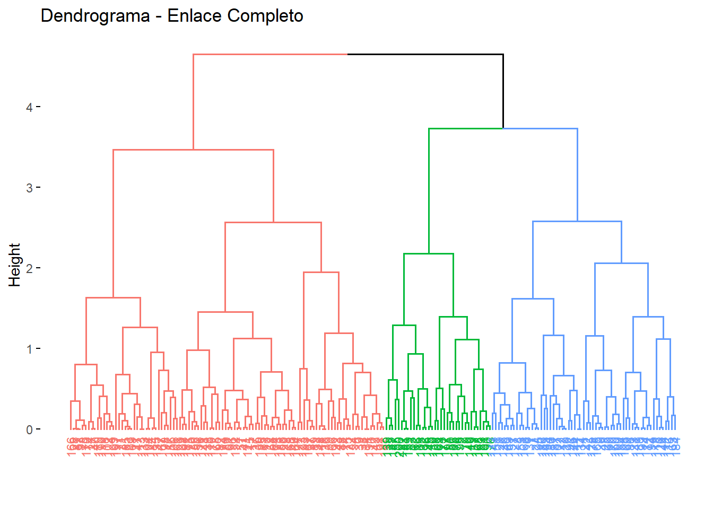

# cargamos los datos
data <-read.csv("data_comercio.csv",
header=TRUE, sep=",")
# eliminamos el identificador
raw_data <- data %>% select(-1)
# filtramos las variables numericas
raw_data_numeric <- raw_data[, sapply(raw_data, is.numeric)]P4 - Segmentación de clientes utilizando métodos de clustering jerárquicos
20582 - Análisis de Datos para el GMAT
Enlace al repositorio de Github
Problema 4
Una empresa de comercio busca identificar segmentos de clientes según sus patrones de compra. Para ello, se dispone de un conjunto de datos ficticio denominado data_comercio.csv. Este conjunto de datos incluye información sobre la identificación del cliente, la categoría de las compras realizadas, el importe gastado en euros, el número de artículos adquiridos y la fecha de la última compra. La tarea consiste en realizar una segmentación de clientes utilizando métodos de clustering jerárquicos con diferentes enlaces y distancias.
Deberéis presentar visualizaciones de los agrupamientos obtenidos con cada método y comparar las diferencias entre ellos, destacando las ventajas y desventajas de cada enfoque. Además, se espera un análisis de las características principales de cada clúster, identificando, por ejemplo, a los clientes con mayor gasto promedio, el número promedio de artículos comprados por grupo y otras características relevantes. Finalmente, con base en los segmentos identificados, se deben proponer recomendaciones estratégicas para diseñar campañas de marketing dirigidas específicamente a cada segmento.
Resumen
Lectura y limpieza de los datos
Análisis descriptivo
Analicemos nuestro conjunto de datos, que consta de 200 observaciones y 5 variables:
Descripción variables
cliente_id: Es una variable utilizada como identificador único para cada muestra. Los nombres se construyen siguiendo un formato específico: la letra “C” seguida por un número que corresponde al número de la muestra.
categoria: Es una variable cualitativa que clasifica a los individuos según el tipo de compra que han realizado. En la siguiente tabla se presentan las categorías disponibles junto con la cantidad de observaciones correspondientes a cada una:
table(raw_data$categoria)
Alimentos Electrónica Hogar Juguetes Ropa
37 46 34 43 40 importe_gastado: Es una variable cuantitativa continua que representa el importe gastado, expresado en euros.num_articulos: Es una variable cuantitativa discreta que representa el número de articulos comprados.ultima_compra: Es una variable de tipo fecha. Nos indica la fecha de la ultima compra.
Visualizemos ahora un gráfico de puntos de las variables importe_gastado y num_articulos según la categoria:
d <- raw_data %>% select(categoria, importe_gastado, num_articulos)
ggplot(data = d, aes(x = importe_gastado, y = num_articulos, color = categoria)) +
geom_point(size = 2.5) +
theme_bw()Representamos con ggpairs la relación entre las tres variables importe_gastado, num_articulos y categoria.
d <- raw_data %>% select(categoria, importe_gastado, num_articulos)
ggpairs(d, mapping = aes(color= categoria), legend = 1) +
theme_bw()Observamos también las medias y medianas de los datos por cada categoría:
d %>%
group_by(categoria) %>%
summarise(
media_importe = mean(importe_gastado, na.rm = TRUE),
mediana_importe = median(importe_gastado, na.rm = TRUE),
media_articulos = mean(num_articulos, na.rm = TRUE),
mediana_articulos = median(num_articulos, na.rm = TRUE)
)# A tibble: 5 × 5
categoria media_importe mediana_importe media_articulos mediana_articulos
<chr> <dbl> <dbl> <dbl> <dbl>
1 Alimentos 257. 233. 5.30 5
2 Electrónica 277. 263. 6.33 7
3 Hogar 291. 311. 5 5
4 Juguetes 252. 250. 6.53 7
5 Ropa 270. 234. 5.18 5Aplicación y comparación de distintos métodos de clustering jerárquicos aglomerativos
Como la magnitud de los valores difiere notablemente entre variables, las escalamos.
raw_data_numeric <- scale(raw_data_numeric, center = TRUE, scale = TRUE)Apliquemos métodos de clustering jerárquico aglomerativo. Para ello debemos escoger una medida de distancia y un tipo de enlace. Veamos los casos estudiados:
Distancia Euclidea
En este caso, empleamos la función hclust(), a la que se pasa como argumento una matriz de distancia euclidea y el tipo de enlace Se comparan los resultados con los enlaces simple, completo, medio y de Ward:
raw_data_numeric <- scale(raw_data_numeric, center = TRUE, scale = TRUE)
# Matriz de distancias
matriz_distancias <- dist(raw_data_numeric, method = "euclidean")
# Fijamos semilla
set.seed(123)
hc_euclidea_simple <- hclust(d = matriz_distancias, method = "single")
hc_euclidea_completo <- hclust(d = matriz_distancias, method = "complete")
hc_euclidea_medio <- hclust(d = matriz_distancias, method = "average")
hc_euclidea_ward <- hclust(d = matriz_distancias, method = "ward.D2")Representemos los dendogramas:
fviz_dend(x = hc_euclidea_simple, cex = 0.6, main = "Dendrograma - Enlace Simple")Warning: The `<scale>` argument of `guides()` cannot be `FALSE`. Use "none" instead as
of ggplot2 3.3.4.
ℹ The deprecated feature was likely used in the factoextra package.
Please report the issue at <https://github.com/kassambara/factoextra/issues>.
fviz_dend(x = hc_euclidea_completo, cex = 0.6, main = "Dendrograma - Enlace Completo")
# + theme(plot.title = element_text(hjust = 0.5, size = 15))
fviz_dend(x = hc_euclidea_medio, cex = 0.6, main = "Dendrograma - Enlace Medio")fviz_dend(x = hc_euclidea_ward, cex = 0.6, main = "Dendrograma - Enlace de Ward")
Sabemos que existen 5 grupos en la población, evaluemos ahora que enlace consigue los mejores resultados. En este caso, los cuatro tipos identifican claramente 5 clusters. Aunque esto no significa que en los 4 dendrogramas los clusters estén formados por exactamente las mismas observaciones.
Evaluemos hasta qué punto su estructura refleja las distancias originales entre observaciones con el coeficiente de correlación entre las distancias cophenetic del dendrograma (altura de los nodos) y la matriz de distancias original:
cor(x = matriz_distancias, cophenetic(hc_euclidea_simple))[1] 0.3379576cor(x = matriz_distancias, cophenetic(hc_euclidea_completo))[1] 0.6481864cor(x = matriz_distancias, cophenetic(hc_euclidea_medio))[1] 0.6561439cor(x = matriz_distancias, cophenetic(hc_euclidea_ward))[1] 0.6267467Cuanto más cercano es el valor a 1, mejor refleja el dendrograma la verdadera similitud entre las observaciones. En este caso, el método de enlace medio consigue representar ligeramente mejor la similitud entre observaciones, seguido por el enlace completo y el de Ward. En este caso, el enlace simple es el que da peores resultados.
Ahora tenemos que decidir a qué altura cortamos para generar los clusters. La función cutree() nos devuelve el cluster al que se ha asignado cada observación dependiendo del número de clusters especificado:
cutree(hc_euclidea_medio, k = 5) [1] 1 2 2 3 4 5 5 5 5 4 3 5 1 4 1 2 1 4 2 1 5 5 3 5 5 5 3 4 5 1 3 2 4 4 2 1 1
[38] 4 4 3 1 5 4 5 2 5 3 1 5 2 5 4 2 4 2 3 1 1 4 5 1 2 5 1 1 4 3 1 2 5 3 2 3 3
[75] 4 2 1 4 2 1 2 1 3 3 1 2 4 4 1 3 2 5 4 2 5 1 4 3 2 5 3 3 2 3 2 3 5 1 3 1 5
[112] 5 3 2 5 5 3 3 5 5 1 1 1 3 5 5 5 1 1 2 5 4 3 5 3 4 5 1 2 1 2 4 5 5 5 5 3 4
[149] 2 1 5 1 5 5 1 1 2 3 2 5 3 3 5 1 5 4 1 2 5 4 5 1 1 1 1 3 3 5 3 5 1 2 4 5 3
[186] 5 2 1 2 3 4 4 1 5 2 2 3 2 3 2Una forma visual de comprobar los errores en las asignaciones es indicando en el argumento labels el grupo real al que pertenece cada observación. Si la agrupación resultante coincide con los grupos reales, entonces, dentro de cada clusters las labels serán las mismas.
table(cutree(hc_euclidea_ward, k = 5), raw_data$categoria)
Alimentos Electrónica Hogar Juguetes Ropa
1 7 8 4 11 8
2 8 4 7 7 6
3 4 7 8 4 5
4 16 14 11 9 15
5 2 13 4 12 6Validación. D. Eculidea, Enlace Completo.
fviz_dend(x = hc_euclidea_completo, cex = 0.5, main = "Enlace completo", k_colors = "jco",
sub = "Distancia euclídea") +
theme(plot.title = element_text(hjust = 0.5, size = 15))hkmeans_cluster <- hkmeans(x = raw_data_numeric, hc.metric = "euclidean",
hc.method = "complete", k = 5)
hkmeans_clusterHierarchical K-means clustering with 5 clusters of sizes 56, 33, 25, 52, 34
Cluster means:
importe_gastado num_articulos
1 -0.8537801 0.7009203
2 0.9091991 -1.1190417
3 1.3911560 0.3282921
4 -0.7408635 -0.9294020
5 0.6339446 1.1117189
Clustering vector:
[1] 1 2 3 4 1 5 5 5 3 1 4 5 1 4 1 2 1 1 2 1 5 5 4 5 3 3 4 4 5 1 4 2 1 4 2 1 1
[38] 4 1 4 1 5 4 5 2 5 4 1 3 2 5 1 2 5 2 4 1 1 4 3 1 2 3 1 1 4 4 1 3 3 4 3 2 4
[75] 4 2 4 4 2 1 2 1 4 4 1 3 4 4 1 2 2 5 4 3 5 1 1 4 3 3 2 4 2 4 2 4 5 1 4 1 5
[112] 5 4 3 3 5 4 4 2 5 1 1 4 4 5 5 5 1 1 2 1 4 4 5 4 1 5 1 2 1 3 1 5 3 5 5 4 1
[149] 2 1 5 1 5 3 1 1 2 4 2 3 4 4 5 1 3 4 1 2 5 4 1 1 1 1 1 2 2 3 4 1 1 2 1 3 4
[186] 5 2 1 3 4 4 4 1 5 2 2 4 3 4 2
Within cluster sum of squares by cluster:
[1] 23.493083 13.920798 7.634665 23.705378 12.088293
(between_SS / total_SS = 79.7 %)
Available components:
[1] "cluster" "centers" "totss" "withinss" "tot.withinss"
[6] "betweenss" "size" "iter" "ifault" "data"
[11] "hclust" fviz_cluster(object = hkmeans_cluster, pallete = "jco", repel = TRUE) +
theme_bw() + labs(title = "Hierarchical k-means Clustering")
Distancia Manhatta
Hacemos lo mismo con la distància de Manhattan
# Matriz de distancias
matriz_distancias2 <- dist(raw_data_numeric, method = "manhattan")
# Fijamos semilla
set.seed(123)
hc_manhattan_simple <- hclust(d = matriz_distancias2, method = "single")
hc_manhattan_completo <- hclust(d = matriz_distancias2, method = "complete")
hc_manhattan_medio <- hclust(d = matriz_distancias2, method = "average")
hc_manhattan_ward <- hclust(d = matriz_distancias2, method = "ward.D2")Representemos los dendogramas:
fviz_dend(x = hc_manhattan_simple, cex = 0.6, main = "Dendrograma - Enlace Simple")fviz_dend(x = hc_manhattan_completo, cex = 0.6, main = "Dendrograma - Enlace Completo")
fviz_dend(x = hc_manhattan_medio, cex = 0.6, main = "Dendrograma - Enlace Medio")
fviz_dend(x = hc_manhattan_ward, cex = 0.6, main = "Dendrograma - Enlace de Ward")
Evaluemos hasta qué punto su estructura refleja las distancias originales entre observaciones con el coeficiente de correlación entre las distancias cophenetic del dendrograma (altura de los nodos) y la matriz de distancias original:
cor(x = matriz_distancias2, cophenetic(hc_manhattan_simple))[1] 0.3945775cor(x = matriz_distancias2, cophenetic(hc_manhattan_completo))[1] 0.6086569cor(x = matriz_distancias2, cophenetic(hc_manhattan_medio))[1] 0.6383726cor(x = matriz_distancias2, cophenetic(hc_manhattan_ward))[1] 0.6333568Ahora tenemos que decidir a qué altura cortamos para generar los clusters. La función cutree() nos devuelve el cluster al que se ha asignado cada observación dependiendo del número de clusters especificado:
cutree(hc_manhattan_medio, k = 5) [1] 1 2 3 4 4 5 5 5 5 4 4 5 1 4 1 3 1 1 3 1 5 5 4 5 5 3 4 4 5 1 4 3 1 4 2 1 1
[38] 4 4 4 1 5 4 5 3 5 4 1 5 2 5 4 3 4 3 4 1 1 4 5 1 3 5 1 1 4 4 1 3 5 4 3 2 4
[75] 4 2 4 4 2 1 3 1 4 4 1 3 4 4 1 4 2 5 4 3 5 1 4 4 3 5 4 4 3 4 2 4 5 1 4 1 5
[112] 5 4 3 3 5 4 4 3 5 1 1 4 4 5 5 5 1 1 3 5 4 4 5 4 1 5 1 2 1 3 4 5 3 5 5 4 1
[149] 2 1 5 1 5 5 1 1 3 2 3 5 4 2 5 1 5 4 1 3 5 4 1 1 1 1 1 4 2 5 4 5 1 3 4 5 4
[186] 1 2 1 3 4 4 4 4 5 2 3 4 3 4 3Una forma visual de comprobar los errores en las asignaciones es indicando en el argumento labels el grupo real al que pertenece cada observación. Si la agrupación resultante coincide con los grupos reales, entonces, dentro de cada clusters las labels serán las mismas.
table(cutree(hc_manhattan_medio, k = 5), raw_data$categoria)
Alimentos Electrónica Hogar Juguetes Ropa
1 7 10 5 16 9
2 3 1 3 4 4
3 7 5 9 4 5
4 16 14 11 7 14
5 4 16 6 12 8